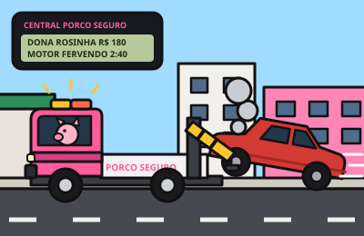

bi-bi!

Guincho Porco Seguro
Jogo de guincho 3D numa cidade de porquinhos: o pager da central manda os chamados, você engata o carro e leva cada um à borracharia, à auto elétrica ou à funilaria antes do prazo. O que sobra no fim do turno vira melhoria na oficina.